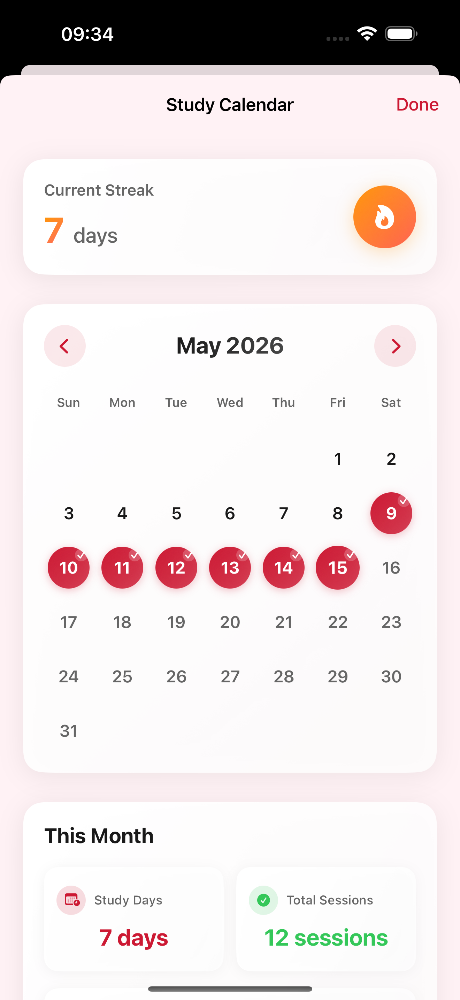
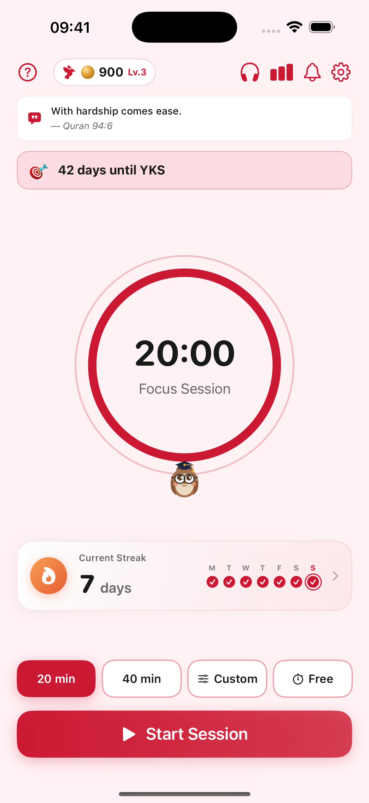
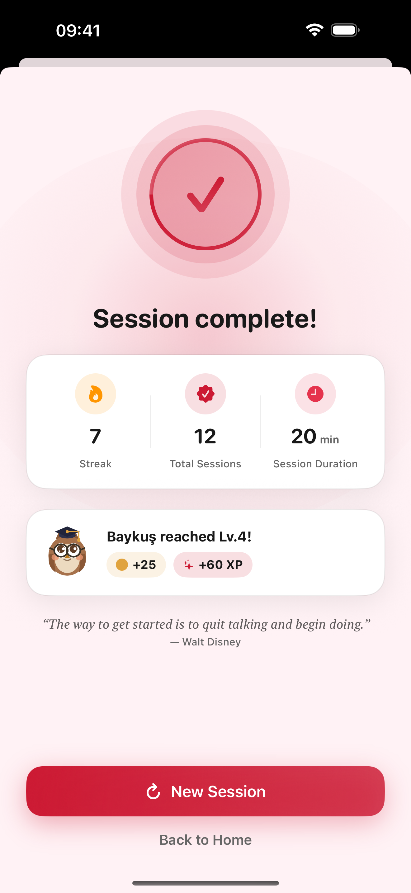

Beat procrastination with focused study sessions. Set a timer, build daily streaks, and stay motivated — fully offline, no account needed.



Focus is easy to lose and hard to rebuild. Most study tools are cluttered, online-only, or simply get in the way.
Notifications and open tabs pull your attention away the moment you sit down to study.
Without visible progress, it's hard to stay consistent day after day.
Many apps feel heavy and clinical, turning a simple study session into a chore.
A clean, distraction-free timer that turns scattered hours into focused sprints — one session at a time.
Pick 20, 40, or a custom duration and start a distraction-free session instantly.
Proven focus/break cycles keep your mind fresh through long study sessions.
Smart study reminders help you never miss a session.
Every feature guides you gently — turning study time into clear progress and a habit that sticks.
Build a study habit that lasts. Watch your streak grow one day at a time.
Pick the color that matches your mood — the app icon even changes to match.
See completed sessions and streaks at a glance to stay motivated.
No sign-up, no account, no distractions. Your data stays on your device.
"Feels less like a strict timer and more like a calm study buddy that keeps me going."
"My streak hit 21 days — I've genuinely never been this consistent with studying."
"Clean, quiet, and works fully offline. Exactly the focus tool I was missing."
Study Sprint Timer is launching soon on the App Store. Simple, offline, and built to help you focus.
Get Notified